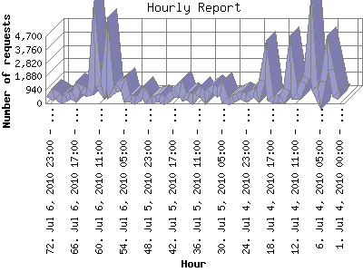

The Hourly Report identifies the level of activity for each hour within the report timeframe. Remember that one page hit can result in several server requests as the images for each page are loaded.

| Hour | Number of requests | Number of page requests | |
|---|---|---|---|
| 1. | Jul 4, 2010 00:00 - 00:59 | 510 | 5 |
| 2. | Jul 4, 2010 01:00 - 01:59 | 654 | 8 |
| 3. | Jul 4, 2010 02:00 - 02:59 | 2,369 | 16 |
| 4. | Jul 4, 2010 03:00 - 03:59 | 3,401 | 5 |
| 5. | Jul 4, 2010 04:00 - 04:59 | 1,554 | 13 |
| 6. | Jul 4, 2010 05:00 - 05:59 | 362 | 4 |
| 7. | Jul 4, 2010 06:00 - 06:59 | 1,061 | 3 |
| 8. | Jul 4, 2010 07:00 - 07:59 | 4,650 | 7 |
| 9. | Jul 4, 2010 08:00 - 08:59 | 1,809 | 12 |
| 10. | Jul 4, 2010 09:00 - 09:59 | 1,463 | 5 |
| 11. | Jul 4, 2010 10:00 - 10:59 | 577 | 6 |
| 12. | Jul 4, 2010 11:00 - 11:59 | 542 | 7 |
| 13. | Jul 4, 2010 12:00 - 12:59 | 2,841 | 17 |
| 14. | Jul 4, 2010 13:00 - 13:59 | 969 | 10 |
| 15. | Jul 4, 2010 14:00 - 14:59 | 241 | 4 |
| 16. | Jul 4, 2010 15:00 - 15:59 | 314 | 3 |
| 17. | Jul 4, 2010 16:00 - 16:59 | 285 | 1 |
| 18. | Jul 4, 2010 17:00 - 17:59 | 400 | 4 |
| 19. | Jul 4, 2010 18:00 - 18:59 | 2,844 | 2 |
| 20. | Jul 4, 2010 19:00 - 19:59 | 1,558 | 3 |
| 21. | Jul 4, 2010 20:00 - 20:59 | 493 | 5 |
| 22. | Jul 4, 2010 21:00 - 21:59 | 742 | 1 |
| 23. | Jul 4, 2010 22:00 - 22:59 | 485 | 2 |
| 24. | Jul 4, 2010 23:00 - 23:59 | 352 | 3 |
| 25. | Jul 5, 2010 00:00 - 00:59 | 577 | 4 |
| 26. | Jul 5, 2010 01:00 - 01:59 | 443 | 3 |
| 27. | Jul 5, 2010 02:00 - 02:59 | 288 | 8 |
| 28. | Jul 5, 2010 03:00 - 03:59 | 213 | 1 |
| 29. | Jul 5, 2010 04:00 - 04:59 | 255 | 1 |
| 30. | Jul 5, 2010 05:00 - 05:59 | 1,050 | 3 |
| 31. | Jul 5, 2010 06:00 - 06:59 | 753 | 10 |
| 32. | Jul 5, 2010 07:00 - 07:59 | 1,024 | 16 |
| 33. | Jul 5, 2010 08:00 - 08:59 | 796 | 11 |
| 34. | Jul 5, 2010 09:00 - 09:59 | 399 | 6 |
| 35. | Jul 5, 2010 10:00 - 10:59 | 820 | 10 |
| 36. | Jul 5, 2010 11:00 - 11:59 | 564 | 10 |
| 37. | Jul 5, 2010 12:00 - 12:59 | 252 | 3 |
| 38. | Jul 5, 2010 13:00 - 13:59 | 520 | 6 |
| 39. | Jul 5, 2010 14:00 - 14:59 | 465 | 9 |
| 40. | Jul 5, 2010 15:00 - 15:59 | 1,154 | 8 |
| 41. | Jul 5, 2010 16:00 - 16:59 | 696 | 7 |
| 42. | Jul 5, 2010 17:00 - 17:59 | 706 | 3 |
| 43. | Jul 5, 2010 18:00 - 18:59 | 338 | 2 |
| 44. | Jul 5, 2010 19:00 - 19:59 | 195 | 1 |
| 45. | Jul 5, 2010 20:00 - 20:59 | 409 | 5 |
| 46. | Jul 5, 2010 21:00 - 21:59 | 314 | 1 |
| 47. | Jul 5, 2010 22:00 - 22:59 | 261 | 4 |
| 48. | Jul 5, 2010 23:00 - 23:59 | 276 | 2 |
| 49. | Jul 6, 2010 00:00 - 00:59 | 764 | 2 |
| 50. | Jul 6, 2010 01:00 - 01:59 | 365 | 13 |
| 51. | Jul 6, 2010 02:00 - 02:59 | 177 | 5 |
| 52. | Jul 6, 2010 03:00 - 03:59 | 351 | 3 |
| 53. | Jul 6, 2010 04:00 - 04:59 | 376 | 7 |
| 54. | Jul 6, 2010 05:00 - 05:59 | 1,429 | 4 |
| 55. | Jul 6, 2010 06:00 - 06:59 | 1,076 | 0 |
| 56. | Jul 6, 2010 07:00 - 07:59 | 1,009 | 3 |
| 57. | Jul 6, 2010 08:00 - 08:59 | 779 | 11 |
| 58. | Jul 6, 2010 09:00 - 09:59 | 3,543 | 10 |
| 59. | Jul 6, 2010 10:00 - 10:59 | 915 | 6 |
| 60. | Jul 6, 2010 11:00 - 11:59 | 1,199 | 2 |
| 61. | Jul 6, 2010 12:00 - 12:59 | 4,239 | 1 |
| 62. | Jul 6, 2010 13:00 - 13:59 | 848 | 6 |
| 63. | Jul 6, 2010 14:00 - 14:59 | 736 | 3 |
| 64. | Jul 6, 2010 15:00 - 15:59 | 935 | 9 |
| 65. | Jul 6, 2010 16:00 - 16:59 | 1,156 | 11 |
| 66. | Jul 6, 2010 17:00 - 17:59 | 453 | 9 |
| 67. | Jul 6, 2010 18:00 - 18:59 | 578 | 3 |
| 68. | Jul 6, 2010 19:00 - 19:59 | 398 | 3 |
| 69. | Jul 6, 2010 20:00 - 20:59 | 238 | 3 |
| 70. | Jul 6, 2010 21:00 - 21:59 | 514 | 3 |
| 71. | Jul 6, 2010 22:00 - 22:59 | 728 | 2 |
| 72. | Jul 6, 2010 23:00 - 23:59 | 312 | 9 |
Most active hour May 31, 2010 15:00 - 15:59 : 28 pages sent. 4,650 requests handled.
Hourly average: 5 pages sent. 921 requests handled.
This report was generated on July 7, 2010 05:38.
Report time frame May 29, 2010 00:00 to July 6, 2010 23:59.
| Web statistics report produced by: analog 6.0 / Report Magic 2.21 |